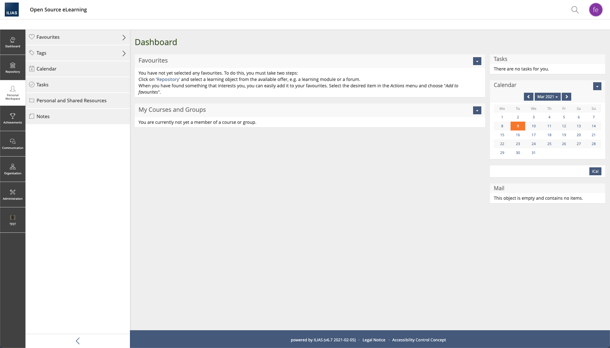
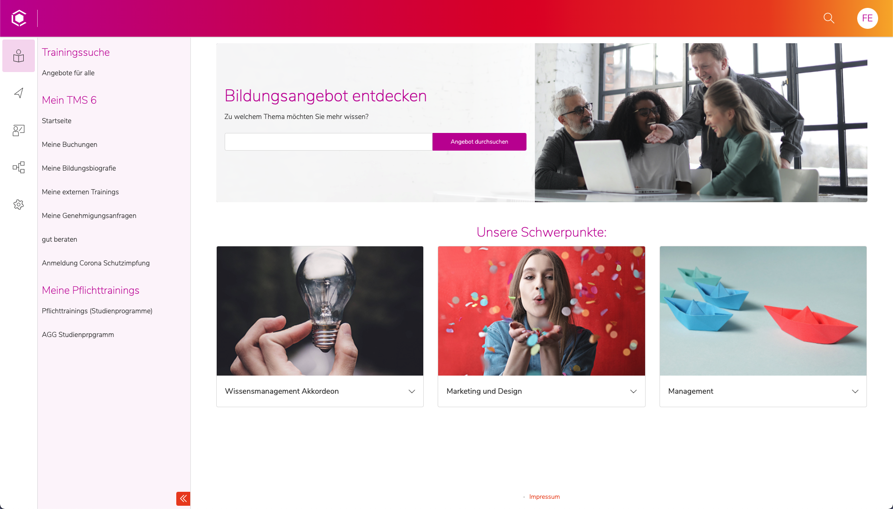
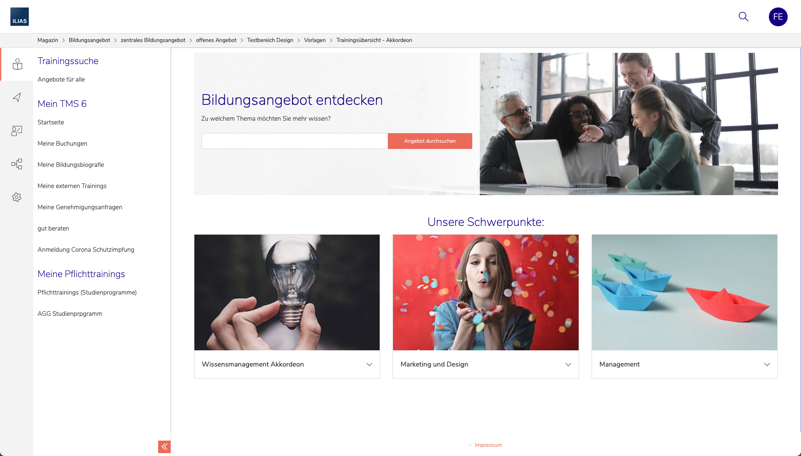
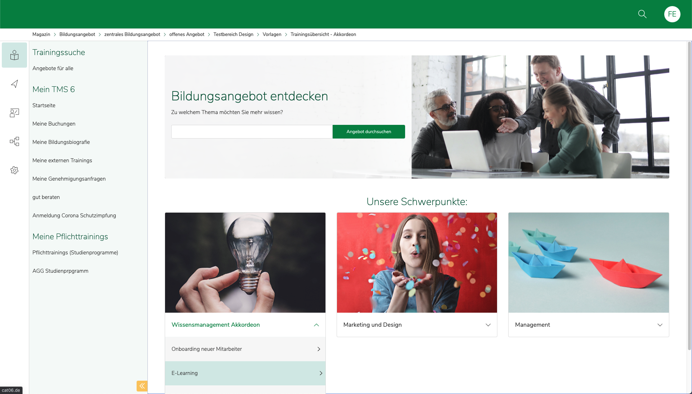
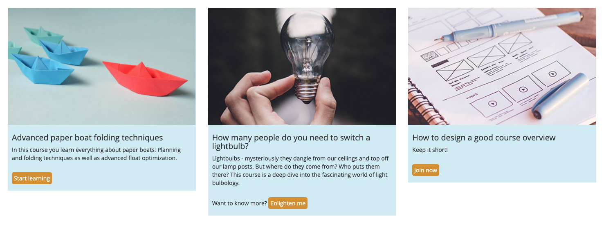
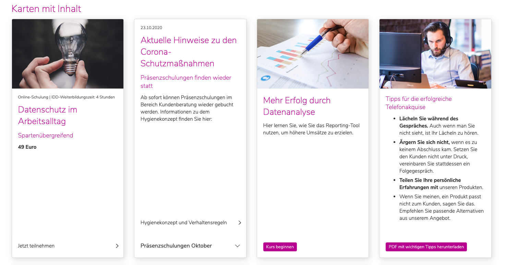
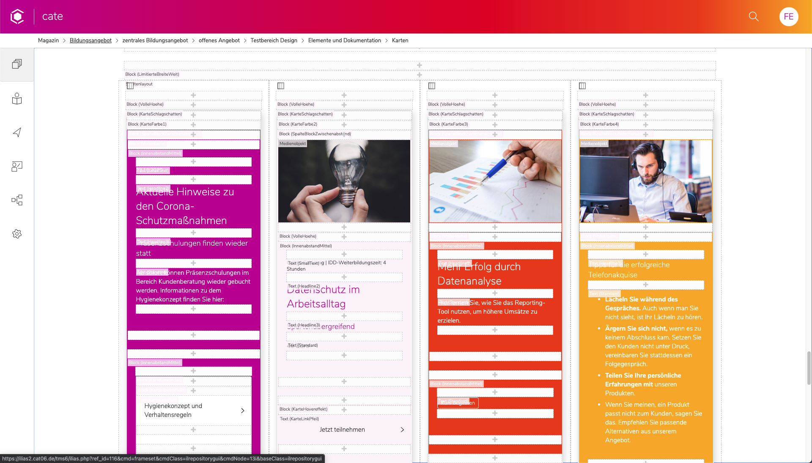
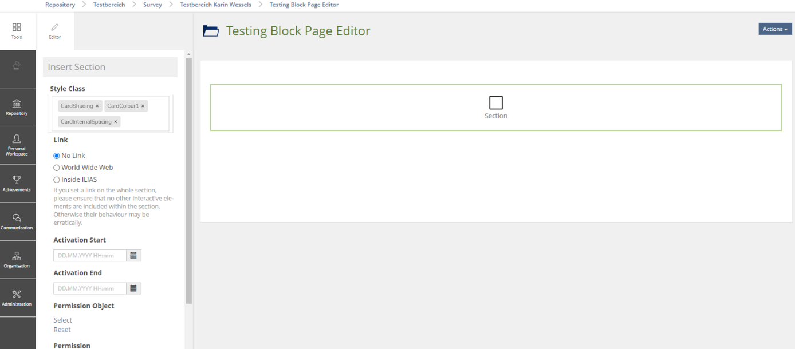

Creating designed elements to guide attention
for a better UX
Christoph Krahl
Linda Dierke
Ferdinand Engländer
Concepts and Training = CaT
offers ILIAS-based training management solution for businesses (insurances, car dealers)
As content grows:
Navigation, lists, breadcrumbs and dashboards get overwhelming
User feels lost
We need to guide the user through categories and content
filter and reduce input
maximize overview
public pages need to look on brand
Skin design




Tools for designing content
usually used for small visual changes of page editor elements
text, border, background color
Complex magazine layouts are possible with column layout
Let’s use the page editor
and instead of building content pages
let’s create a toolbox
for creating home and overview pages
so admins can create custom simplified navigations
and help users find their way
Content styles offer many possibilities beyond just changing a text color.
Card with an image, description text and call to action button

Displaying a selection of courses of a sub-category
Recommending a course within a content body
so you can build it yourself
so you experience the issues
Content styles are created through the admin interface
Layout and Navigation > Layout > Content Styles
Block
On the side
Assembling our elements inside the page editor
Adding images
Media
Adding a headline
Block
Character
Adding the button
Done!
many, many clicks
long, overwhelming form
disjointed from the editor (on purpose)
no quick preview of how these elements come together
actually not that accessible - CSS knowledge required
designer (power user): frustrated and limited by the form
user (beginner): intimidated, no WYSIWYG feedback
very hard to do anything beyond quick changes
Impossible with just the form:
Styling the CSS instead of form parameters
Creating the content styles without adding any settings
Name of the style appears in the editor dropdowns
Using the Chrome Inspector for Styling
Save the LESS/CSS code
CSS
.ilc_section_ContentCardBase {
background-color: #e9f8fd;
}
.ilc_section_ContentCardPadding {
padding: 10px;
}
.ilc_text_inline_ContentCardButtonPrimary {
background-color: #e69e1a;
color: white;
padding: 10px;
border-radius: 5px;
}
.ilc_section_ContentCardBase figure.ilc_media_cont_MediaContainer {
margin: 0;
width: 100%;
}
LESS
.ilc_section_ContentCardBase {
background-color: mix(#FFF,@brand-primary,50%);
figure.ilc_media_cont_MediaContainer {
margin: 0;
width: 100%;
}
}
.ilc_section_ContentCardPadding {
padding: 10px;
}
.ilc_text_inline_ContentCardButtonPrimary {
background-color: @brand-secondary;
color: white;
padding: 10px;
border-radius: 5px;
}
Official guide on how to create a skin
Importing our custom-content-styles.less in our skin
@import "less/custom-content-styles.less";
Compiling a delos.css that includes our additions
designer (power user): can style to his hearts content
user (beginner): can be offered a library of helpful content styles
Settings of all elements at one glance
no clicking around and scrolling through a form
Use of less variables like @brand-primary
new possibilities like hover states for our “button”
requires file access to the server and a custom skin setup
not closer to a WYSIWYG experience for the user
We took this further…
Content cards build for Cate:

fancy additions:
All controlled by individual blocks
ended up in excessive nesting
Inside page editor:
One block per setting

Code of the content cards:
One div per setting is not good practice
Defined by admins / designers
use at your own risk is “ok”
Used in the page editor by users
should be self explanatory and fool proof
How do we enpower users
to create more complex layouts
on brand without confusion?
Allow choosing multiple styles for one block

Avoids nesting chaos
less clicks inside page editor
User still only has a access to carefully selected on-brand options
CaT is looking into implementing this
adding to the core if it’s deemed a worthy addition
funding, feedback, cooperation is greatly appreciated
There are powerful page builders out there…
Wordpress: Elementor, Divi, Gutenberg
Get inspiration, but innovate on a small and practical level
Should contents styles and page editor grow closer together?
library of nested block templates?
Why?
Because ILIAS pages are not just a canvas for text
design options for pages enpower authors to
guide attention and simplify navigations
for a better user experience
Thank you :)